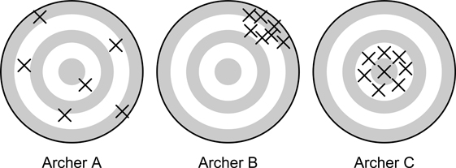

y <- 3:0
f <- c(16, 4, 2, 3)
p <- c(.64, .16, .08, .12)
dta <- rep(y, f)Foundations of Statistical Estimation
We review some of the introductory concepts of statistics that will be a pre-requisite for the remainder of the course.
Introduction
In this section we review the basic concepts underlying the selection of an estimator of a population parameter, the method for evaluating its goodness, and the concepts involved in interval estimation. Because the bias and the variance of estimators determine their goodness, we need to review the basic ideas concerned with the expectation and variance of a random variable.
Populations and Samples
Statistical inference centers around using information from a sample to understand what might be true about the entire population of interest. If all we see are the data in the sample, what conclusions can we draw about the population? How sure are we about the accuracy of those conclusions?
On April 29, 2011, Prince William married Kate Middleton in London. The Pew Research Center reports that 34% of US adults watched some or all of the royal wedding. How do we know that 34% of all US adults watched? Did anyone ask you if you watched it? In order to know for sure what proportion of US adults watched the wedding, we would need to ask all US adults whether or not they watched. This would be very difficult to do. As we will see, however, we can estimate the population proportion parameter quite accurately with a sample statistic, as long as we use a random sample. In the case of the royal wedding, the estimate is based on a poll using a random sample of 1006 US adults.
- Statistical inference:
- Parameter:
- Statistic:
Generally our goal is to know the value of the population parameter exactly but this usually isn’t possible since we usually cannot collect information from the entire population.
Instead we can select a sample from the population, calculate the quantity of interest for the sample, and use this sample statistic to estimate the value for the whole population.
The value of a statistic for a particular sample gives a point estimate of the population parameter. If we only have the one sample and don’t know the value of the population parameter, …
After we have a little more mathematical terminology and foundation, we’ll come back to what we mean by “best estimate”, and examine how we can determine if something is a “good” estimate.
Numerical Summaries
The first thing that we do with data is to summarize it with graphs and numbers.
Empirical: Relying on or derived from observation or experiment.
- Histograms or relative frequency tables can be used to…
- Once a relative frequency distribution has been established for a population, we can use probability arguments to …
- The numerical measures used to summarize the characteristics of a population are defined as …
We can also calculate these measurements directly from the sample measurements.
In statistical studies, the population of interest consists of unknown measurements; hence, we can only speculate on the relative frequencies (\(p(y)\)). In order to gain information about a population we take a sample of \(n\), \(y_{1},y_{2},...,y_{n}\). We can then infer characteristics about the population. Given our sample data, \(y_{1},y_{2},...,y_{n}\), we can calculate the mean and variance:
\[\bar{y} = \frac{1}{n}\sum_{i=1}^{n}y_{i}\]
\[s^{2} = \frac{1}{n-1}\sum^{n}_{i=1}\left(y_{i}-\bar{y}\right)^{2}\]
❓ Why do we have \(n-1\) in the denominator for \(s^2\), but only \(n\) in the denominator for \(\bar{y}\)?
Here is some starter code.
The Finite Population Case (Lohr Ch 2.2)
The previous section develops results for random sampling from a population considered to be infinite. In such situations, each sampled element has the same chance of being selected and the selections are independent of one another.
- Most sampling problems don’t live in an infinite world, but the population is usually finite although it may be quite large.
- In addition, we may want to take into consideration varying the probabilities with which the units are sampled.
Example: Estimate total number of job openings.
Suppose, for example, we want to estimate the total number of job openings in a city by sampling industrial firms from within that city. Many of these firms will be small and a few firms will be large. In a random sample of firms, the size of the firm is not taken into account. However, the number of job openings will be directly dependent on the size of the firm. Thus, we might improve the sample if large firms are more likely to be included in the sample.
- Suppose the population consists of the set of elements \(\{u_{1},u_{2},...,u_{N}\}\) and a sample of \(n\) elements is to be selected with replacement independently of one another.
- Let \(\{\delta_{1},\delta_{2},...,\delta_{N}\}\) represent the respective probabilities of selection for the population elements.
- \(\delta_{i}\) is
- for the case of random sampling with replacement, each $_{i} = $
An unbiased estimator of the population total, \(\tau\), is given by
Note: The mathematical definition of unbiased is not the same thing as selection biased discussed earlier. The math definition of bias will be discussed below.
\[ \hat{\tau}=\frac{1}{n}\sum^{n}_{i=1}\frac{y_{i}}{\delta_{i}} \]
When \(\delta_{i} = 1/N\), we can rewrite this as
\[ \hat{\tau} = \frac{1}{n}\sum^{n}_{i=1}\frac{y_{i}}{(1/N)} = \frac{N}{n} \sum^{n}_{i=1}y_{i} = N\bar{y} \]
It is in the best interest to select the \(\delta_{i}\) values in such a way that the _______ is as small as possible. The best practical way to choose the \(\delta_{i}\) is to choose them proportional to a known measurement that is highly correlated with \(y_{i}\).
Example: Job openings cont.
Our universe only consists of these \(N=4\) firms: A, B, C and D.
| Firm | Jobs (\(x\)) | Size of firm | \(\delta_{i}\) |
|---|---|---|---|
| A | 3 | 70 | 70/580 |
| B | 10 | 90 | 90/580 |
| C | 25 | 120 | 120/580 |
| D | 61 | 300 | 300/580 |
The population total of job openings is \(\tau= 99\). But of course we don’t know this, so we want to take a sample of \(n=2\) firms and count the number of jobs at each firm \(x\) as a way to estimate this total.
If all firms have equal probability of being selected, then the subset of firms \(\{A, B\}\) have the same chance of being selected as any other subset of two firms such as \(\{A, C\}\). However, we may want to select firms with probabilities in proportion to their workforce (\(\delta_{i}\)).
Without adjustment the estimate of the total job openings based on the \(\{A, B\}\) sample would be:
\[ \hat{\tau} = N\bar{X} = \]
If we adjust \(y_{i}\) based on the probability of selecting firms A and B,
\[ \hat{\tau} = \frac{.}{.}\Big[\frac{.}{./.} + \frac{.}{./.}\Big] = \]
replace the dots with numbers, then delete this line.
❓ Was this a good estimate of \(\tau\)? Why or why not?
Variability of Estimates
write your answer in your notes AND in HackMD
Along with the point estimate we also want to know how accurate we can expect the point estimate to be. In other words, if we took another random sample of the same size from the population, is the point estimate from this new sample likely to be similar to the first point estimate or are they likely to be far apart.
Example: Enrollment in Graduate Programs in Statistics
Graduate programs in statistics often pay their graduate students, which means that many graduate students in statistics are able to attend graduate school tuition free with an assistantship or fellowship. There are 82 US statistics doctoral programs for which enrollment data were available. The data set StatisticsPhD lists all these schools together with the total enrollment of full-time graduate students in each program in 2009.
❓ What is the average full-time graduate student enrollment in US statistics doctoral programs in 2009?
I don’t feel like loading packages in this file so I’m using the
:: shortcut method to access the here and read_csv functions to load in the data.stat.phd <- readr::read_csv(here::here("___", "_______"))
head(stat.phd)
mean(stat.phd$_______)Error: <text>:3:15: unexpected input
2: head(stat.phd)
3: mean(stat.phd$_
^Based on the data set, the mean enrollment in 2009 is ____ full-time graduate students. Because this is the mean for the entire population of all US statistics doctoral programs for which data were available that year, we have that \(\mu=\) students.
⭐ Use the code below take a random sample of 10 programs from the data file and calculate the mean.
my.sample.programs <- sample(______, size=__)
mean(______)Error: <text>:1:31: unexpected input
1: my.sample.programs <- sample(__
^write your summary discussion in HackMD and in your notes
Knowing the behavior of of repeated sample statistics (like the mean in the prior example) is critically important. Let’s dig into this a little more by repeating this sampling experiment many times.
many.means <- replicate(n=_____, {
my.sample.programs <- sample(stat.phd$FTGradEnrollment, size=10)
mean(my.sample.programs)
})Error: <text>:1:28: unexpected input
1: many.means <- replicate(n=__
^Let’s visualize the distribution of all those sample means.
hist(_____)
summary(_____)Error: <text>:1:7: unexpected input
1: hist(__
^Characteristics of this distribution:
- Shape:
- Center:
- Spread:
🎉 We have just created a _____ of the sample mean.
Sampling Distribution
A sampling distribution is the distribution of
write your summary discussion in your notes AND HackMD
In elementary statistics you were introduced to the “Central Limit Theorem” (CLT). The CLT states that the sampling distribution of \(\bar{y}\) should be centered at \(\mu\) with a standard deviation of \(\sigma/n\). It also states that the shape of the distribution should be approximately Normal for a large \(n\).
The proof of the CLT is generally seen in a first graduate Statistics class that uses convergence in distribution concepts from MATH 420.
Properties of Estimators
In general, suppose that \(\hat{\theta}\) is an estimator of the parameter \(\theta\). Two properties that we would like \(\hat{\theta}\) to have are
- The estimate is unbiased:
- The estimate is precise:
To clarify:
- Measurement bias means that the \(y\)’s are measured inaccurately.
- That means an estimator of a total \(t\) calculated as \(\hat{t} = \sum_{i \in U} y_{i}\) where \(U\) is the entire universe, then \(\hat{t}\) itself would not be the true total of interest.
- Trying to estimate heights of students, but your ruler is always off 3 cm
- Estimation bias means that the estimator chosen resulted in a bias.
- If we calculated the total as \(t' = \sum_{i \in L} y_{i}\) from a random sample of \(L\) units in the universe, \(\hat{t'}\) would be biased.
- Trying to estimate heights of students by taking a sample of the shorter students only.
If two unbiased estimators are available for \(\theta\) we generally prefer the one with the smaller variance.
Because sometimes we use biased estimators, we often use the _______ instead of the variance to estimate the _____________.

👥 TPS. Fill in the blanks.
- A is _____________. The average position of all arrows is at the center of the target.
- B is _____________ but not unbiased. All arrows are close together but systematically away from the center.
- C is _____________. All arrows are close together and near the center of the target.
Example
Suppose probability samples of size \(n=2\) are selected from the list c(1,2,3,4), with \(\delta_{i}\) probabilities c(.4, .4, .1, .1). Demonstrate that \(\hat{\tau}\) is an unbiased estimator of the population total \(\tau\), but its variance is 81.25.
If you are not familiar with working with vectors and matrices in R, check out this YouTube tutorial by MarinStats
Initial problem setup: Define data/sample/known values as objects in R.
x <- 1:4
deltas <- c(.4,.4,.1,.1)
(tau <- sum(x))[1] 10Create all possible samples of size \(n=2\), and add the probability of selection for that sample.
# Create all possible samples of size 2
# Add the selection probabilities Note the resulting object is a table/matrix with 16 rows and 4 columns, where each row is a possible sample of \(n=2\) from the universe.
An alternative method of creating the universe is to create separate vectors
x1 <- rep(x,4); x2 <- rep(x, each=4).Now calculate \(\hat{\tau} = \frac{1}{2}\Big[\frac{x_1}{\delta_1} + \frac{x_2}{\delta_2}\Big]\).
manually verify calculation
Now calculate \(E[\hat{\tau}] = \sum \hat{\tau}*p(\hat{\tau})\) and \(V[\hat{\tau}] = E[\hat{\tau}] - E[\hat{\tau}]^2]\), where \(p(\hat{\tau}) = \delta_1*\delta_2\) is the probability that sample is chosen.
# Calculate selection probability
universe$p.hat.tau <-
(E.tau.hat <- )
(Var.tau.hat <- )Error: <text>:3:15: unexpected ')'
2: universe$p.hat.tau <-
3: (E.tau.hat <- )
^Interval Estimation
In general, it is usually not enough to just give a point estimate when estimating a population parameter. Why?
Bounds on Estimators
The objective of sampling is to estimate the population parameters, such as the mean or the total of a population from information contained in the sample. The experimenter controls the quantity of information by choosing an appropriate sample size. How can we determine how many sampling units to select?
Suppose that we are trying to estimate some parameter \(\theta\) using the sample estimator \(\hat{\theta}\). We want the value of _________ to be small. We refer to the value of _________ as the error because it is the difference between the _________ value and the _________ value.
We might want to specify that the absolute value of the error is less than some number, say \(B\). Thus,
\[ \mbox{Error of Estimation}=|\theta-\hat{\theta}|<B \]
We should also define a probability (\(1-\alpha\)) such that our error is less than \(B\) if we were to take repeated samples.
\[ P\left(|\theta-\hat{\theta}|<B\right)=1-\alpha \]
We will often select \(B\) to be approximately ______________________ of \(\hat{\theta}\), ______________________. As we saw earlier in @ref(#sampling-distribution), many of the statistics that we will discuss exhibit a normal sampling distribution even when the population distribution is skewed.
Standard Error
The standard error of a statistic tells us how much the sample statistic will vary from sample to sample. In situations like above where we can examine the distribution of the sample statistic using simulation, we can estimate the standard error by taking the sample standard deviation of the sampling distribution. In other situations we can use closed form mathematical formulas to calculate the standard error.
Example Grad program example cont.
Estimate the standard error for the mean enrollment in statistics PhD programs for a sample size of 10 and also a sample size of 20.
sd(many.means) # where did this come from?Error in is.data.frame(x): object 'many.means' not foundConfidence Intervals
When the distributions are relatively symmetric and bell-shaped, the 95% rule tells us that approximately 95% of the data values fall within two standard deviations of the mean. Applying the 95% rule to sampling distributions, we see that about 95% of the sample statistics will fall within two standard errors of the mean. We use this rule many times to form what we call an approximate 95% confidence interval which gives us a range for which which we are quite confident that captures the true parameter we are trying to estimate.
When using a formula to calculate an approximate 95% confidence interval, use \(2*SE\) as the margin of error.
CI for PhD program enrollment
Based on our example, what would be a 95% confidence interval for \(\mu\) the true mean total enrollment for PhD programs in statistics. Interpret this confidence interval in context of the problem.
Wrapping the entire line of code in
() will execute that code AND print out the results. This lets me see the results in the rendered document AND store the results in an object to call later, like in my sentence response below.(LCL <- )
(UCL <- )Error: <text>:1:9: unexpected ')'
1: (LCL <- )
^Every time I compile these notes, I draw a different sample and will get a different numbers. To avoid conflicts in my written response, and what the code shows, I use inline R code here. See the RStudio Help –> Markdown Quick Reference for more information.
We can be 95% confident that the true mean total enrollment for PhD programs in statistics is covered by the interval ( ).
Write your answer in HackMD and your notes.